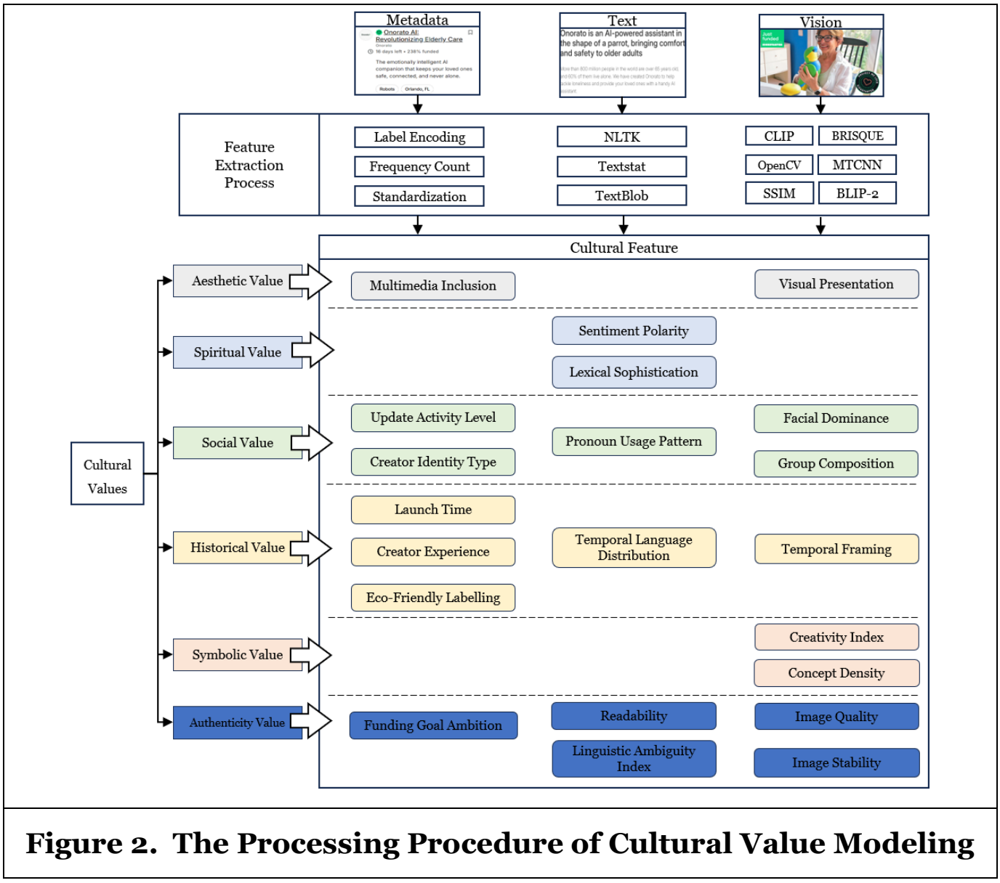

ICIS 2025
Subtly There, Deeply Felt: Modeling Cultural Values in Crowdfunding Success Prediction
Proceedings of the 46th International Conference on Information Systems, 2025.
Creative projects convey cultural meaning through text, images, and project metadata, but these signals are often implicit and noisy. This study represents cultural values from multimodal content and examines their roles in predicting crowdfunding success across project categories.
Method
The Cultural Value-based Prediction Model (CV-PM) maps content features to Throsby's six cultural values. Value-specific convolutional layers and a multilayer perceptron refine each value representation. The Cultural Value Fusion Attention Mechanism (CVFAM) learns their joint contributions to predicting whether a project meets its funding goal.
 Enlarge figure
Enlarge figureFrom content to cultural features
The feature mapping gives each value a concrete set of inputs. For example, aesthetic value draws on multimedia inclusion and visual presentation; spiritual value draws on sentiment and lexical sophistication. Metadata, text-processing tools, and pretrained vision-language models provide the features.

Enlarge figureResults
The study evaluates 14,539 Kickstarter projects in the Art and Design categories using ten-fold cross-validation.
| Category | CV-PM AUC | Strongest baseline AUC | Difference |
|---|---|---|---|
| Art | 94.72% | 93.23% | +1.49 pp |
| Design | 95.14% | 91.49% | +3.65 pp |
pp = percentage points. Source: Table 1, paper p. 11 (PDF p. 12).
Cultural influence mechanisms
Value ablations identify different patterns across project categories. Removing social value causes the largest accuracy loss in Art, from 90.27% to 83.10%. Removing aesthetic value causes the largest loss in Design, from 90.86% to 85.67%.
Attention analysis shows stronger emphasis on historical value in Art and aesthetic value in Design. Social value receives the highest average attention weight in both categories.
Sources: Table 2, paper p. 12 (PDF p. 13); Figure 5, paper p. 13 (PDF p. 14).